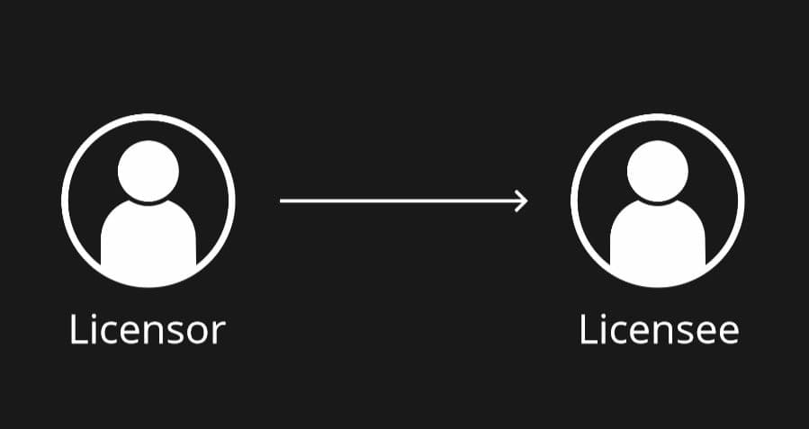
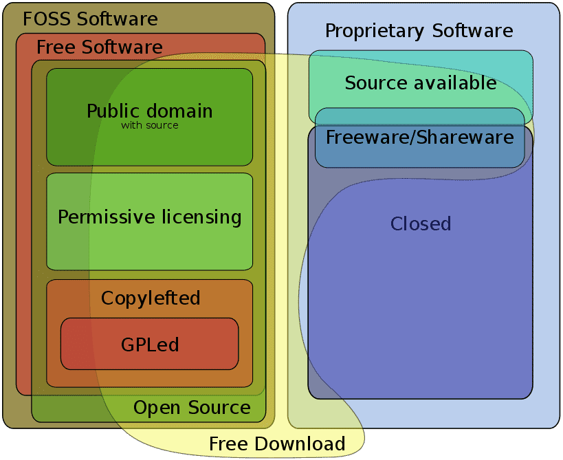
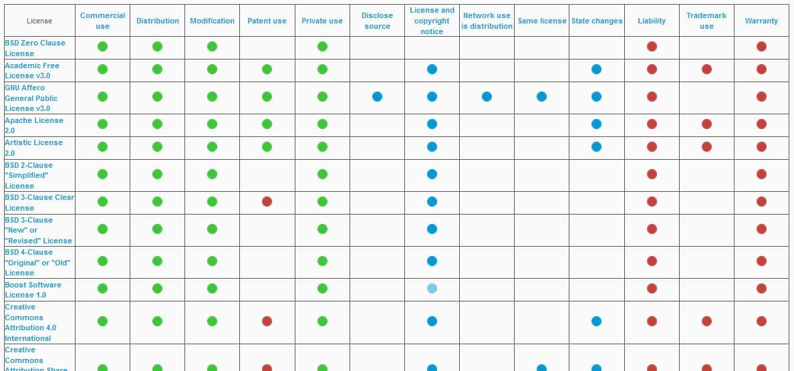
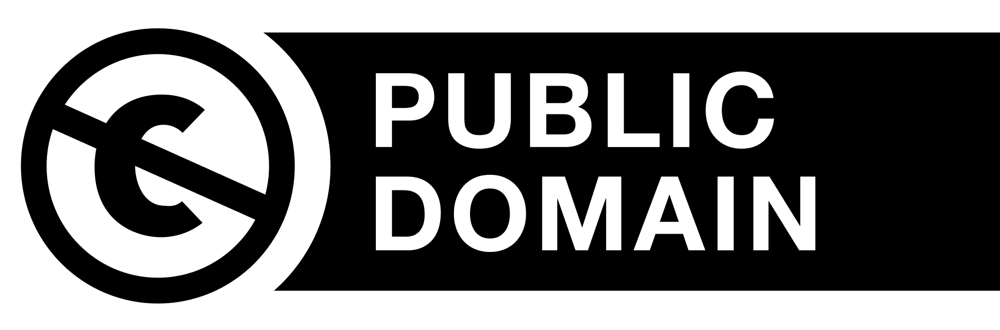
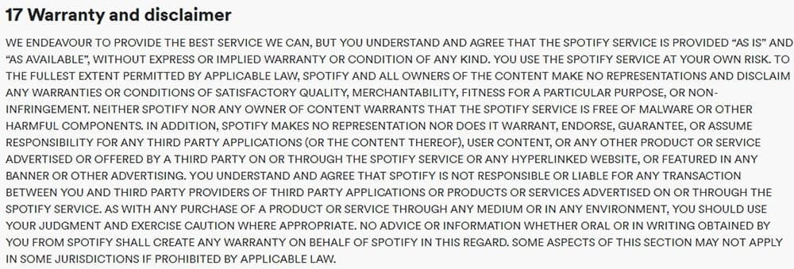
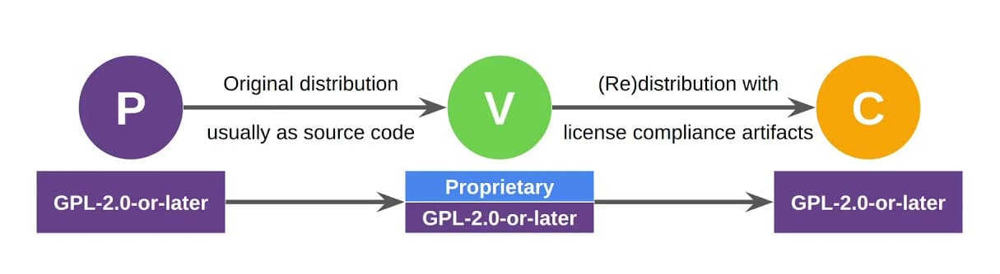

A patent is a twenty year exclusive monopoly on the right to make, use and sell an invention
An inventor must apply to the Patent Office and demonstrate that the invention is new
They can protect features of a program - ideas, systems, methods, algorithms
Since patent rights are exclusive, noone can make, use or sell the patented invention without the patent owner’s approve
Copyrights
Extends to the particular form in which an idea is expressed
The owner of a copyrighted software program has certain exclusive rights
Copyright protection arises automatically upon the creation of an original work of authorship
These rights are subject of software license agreements
Trade Secret
Is maintained in secret by its owner
Gives its owner a competitive advantage because it is kept in secret
Trademark
Applies only to software's name, logo, and other identifying characteristics
Must be officially registered
What is a software license?

What is a software license agreement?
EULA
Contents:
Where the software may be installed and how many instances may be installed
How the software can be used
Whether the software may be copied, modified, or redistributed
Any copyrights that apply to the software
Ownership of the software
Duration of the terms of the agreement
They way how user data is going to be collected
What are the types of software licenses?

Open-source software

Most common open-source licenses:
MIT License (MIT)
Apache License 2.0 (Apache-2.0)
GNU General Public License (GPL)
Berkeley Software Distribution License (BSD)
Internet Systems Consortium License (ISC)
Microsoft Public License
Mozilla Public License
Open-source license subtypes
Public domain

Creative Commons 0

Permissive license
The most common type of open-source licenses
Contains few restrictions or requirements for using it
Often includes warranty dislaimer ('as is', 'with all faults' etc)

Copyleft license
The licensed code may be modified or distributed as part of a software project if the new code is distributed under the same license.

Propietary license
Prohibits copying, modifying, or redistribution
The end-user has access to compiled code only and no access to source code
May require to pay fees to use the software
The end-user must accept the license in order to use the software
Typical restrictions - limiting the number of computers on which software can be used, product activation, availability of truncated versions of application